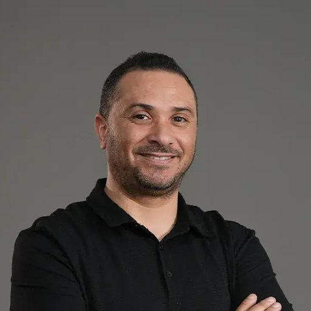

Farouk Mselmi
My research develops probabilistic and inferential tools for structured randomness — generalized linear models for subordinated Lévy and Markov-kernel families, natural exponential families and their variance functions, mixture models, and stable processes — with applications to finance, urban mobility and supply chain management.

Research Areas
PhD and HDR
Jury members
- Pr. Célestin Kokonendji — President, Marie and Louis Pasteur University, France
- Pr. Jean-François Dupuy — Reviewer, Rennes University, France
- Pr. Abderrazed Karoui — Reviewer, Carthage University, Tunisia
- Pr. Yousri Slaoui — Reviewer, Poitiers University, France
- Pr. Mahdi Louati — Examiner, Sfax University, Tunisia
- Pr. Angelo Koudou — Examiner, Lorraine University, France
Jury members
- Pr. Mokhless Hammami — President, Sfax University, Tunisia
- Pr. Sonia Fourati — Reviewer, Rouen Normandy University, France
- Pr. Mohamed Ali Hammami — Reviewer, Sfax University, Tunisia
- Pr. Bassem Ben Hamed — Examiner, Sfax University, Tunisia
Publications
15 journal articles · 1 book · 3 chapters & proceedingsPeer-reviewed journal articles
-
15
-
14Asymptotic Thorin distributions of multivariate generalized splines via Markov–Krein TransformJournal of Statistical Theory and Practice (Springer), Vol. 30, 62, 1–23, 20262026 Springer
-
13On the duality for mixture modelsStatistics and Probability Letters (Elsevier), Vol. 230, 110604, 1–5, 20262026 ScienceDirect
-
12Multivariate generalized linear models for Markov kernels with (un)known link and variance functionsTEST (Springer), Vol. 34, No. 4, 896–926, 20252025 Springer
-
11Urban Mobility Modeling: Application to Seoul Bike Sharing DataEngineering Proceedings (MDPI), Vol. 112, No. 51, 1–9, 20252025 MDPI
-
10Modeling exchange rate volatility: application of GARCH models with a Normal Tempered Stable distributionQuantitative Finance and Economics (AIMS Press), Vol. 6, No. 2, 206–222, 20222022 AIMS Press
-
9Generalized linear model for subordinated Lévy processesScandinavian Journal of Statistics (Wiley), Vol. 49, No. 2, 772–801, 20222022 Wiley
-
8Approximation of the quasi-deviance function for the time-changed Lévy processes by the first-exit time of the inverse Gaussian subordinatorStat (Wiley), Vol. 10, No. 1, 1–9, 20212021 Wiley
-
7The normal tempered stable regression modelCommunications in Statistics: Theory & Methods (Taylor & Francis), Vol. 49, No. 2, 500–512, 20202020 Taylor & Francis
-
6Lévy processes time-changed by the first-exit time of the inverse Gaussian subordinatorFilomat (University of Niš), Vol. 32, No. 7, 2545–2552, 20182018 PDF
-
5Generalized variance functions for infinitely divisible mixture distributionsMediterranean Journal of Mathematics (Springer), Vol. 14, No. 4:165, 1–19, 20182018 Springer
-
4Characterization of the inverse stable subordinatorStatistics and Probability Letters (Elsevier), Vol. 140, 37–43, 20182018 ScienceDirect
-
3The stable processes on symmetric matricesArab Journal of Mathematical Sciences (Elsevier), Vol. 24, No. 1, 63–69, 20182018 ScienceDirect
-
2Characterizations of multivariate stable processesLithuanian Mathematical Journal (Springer), Vol. 57, No. 1, 59–68, 20172017 Springer
-
1Multivariate normal α-stable exponential familiesMediterranean Journal of Mathematics (Springer), Vol. 13, No. 3, 1307–1323, 20152015 Springer
Books
Peer-reviewed chapters & conference papers
-
3Stock Market Volatility Forecasting: A Supervised Learning Approach with Normal Tempered λ-Stable Distribution3rd International Conference on Embedded Systems and Artificial Intelligence (ESAI), 1–5 — IEEE Xplore, 20242024 IEEE Xplore
-
2Comparative performance analysis for Poisson and Poisson-Inverse Gaussian generalized linear models on supply chain managementLecture Notes in Networks and Systems, 1104 LNNS, 91–98 — Springer, 20242024 Springer
-
1Gamma stopping and drifted stable processesSpringer Proceedings in Mathematics and Statistics, 131, 223–232 — Springer, 20152015 Springer
Under Review
4 submitted articles-
Submitted 2026
Generalized estimating equations for longitudinal data with inverse stable margins
F. Mselmi, S. Ferreira -
Submitted 2026
Distribution-Aware Hybrid Neural Learning for Flexible Count Prediction: A Poisson–Tempered Stable Framework
F. Mselmi -
Submitted 2026
Computational Inference for Poisson–Tweedie Regression with Data-Driven Power Selection
F. Mselmi, C. C. Kokonendji -
Submitted 2026
Lévy structure of dual measures for real mixture models
F. Mselmi
Scientific Committees
- 4–5 December 2026 · Settat, Morocco Member of the Scientific Committee — 2nd International Conference on Artificial Intelligence and Cognitive Science for Emerging Technologies (AICSET 2026)
- 14–16 July 2025 · Marrakesh, Morocco Member of the Scientific Committee — International Conference on Artificial Intelligence and Cognitive Science for Emerging Technologies (AICSET 2025)
- 2–6 December 2024 · Yaoundé, Cameroon Member of the Scientific Committee — International Conference on the Promotion of Applied Statistics for decision-making and development in Africa (CIPSA'2024)
-
2–4 May 2024 · Marrakesh, Morocco
Chair of the thematic session “Modeling, simulation and optimization” Chair
7th International Conference on Logistics Operations Management (GOL'24) - 2–4 May 2024 · Marrakesh, Morocco Member of the editorial committee, special session “Artificial Intelligence Techniques and Statistical modeling for Mobility and urban logistics planning” — 7th International Conference on Logistics Operations Management
- 14–16 October 2016 · Sfax, Tunisia Member of the organizing committee — 3rd International Conference on Bayesian Networks and Applications, Sfax University
Refereeing
Referee for the following journals:
Funded Research Projects
Conferences & Workshops
14 entries- 15–16 October 2026 · Portugal Invited speaker Invited — 6th International Conference on Statistics, Mathematics and Computation (WSMC16), Universidade Aberta & Universidade da Beira Interior Regression models for composite responses with heterogeneous distributional components
- 23–25 April 2026 · Marrakech, Morocco 8th International Conference on Research in Applied Mathematics and Computer Science (ICRAMCS 2026)
- 14–16 July 2025 · Marrakech, Morocco International Conference on Artificial Intelligence and Cognitive Science for Emerging Technologies (AICSET 2025) Urban Mobility Modeling: Application to Seoul Bike Sharing Data
- 19–20 December 2024 · Fez, Morocco 3rd International Conference on Embedded Systems and Artificial Intelligence (ESAI'24) Stock Market Volatility Forecasting: A Supervised Learning Approach with Normal Tempered Stable Distribution
- 2–6 December 2024 · Yaoundé, Cameroon International Conference on the Promotion of Applied Statistics for decision-making and development in Africa (CIPSA'2024) Modeling the ratio of Tanimoto coefficients by the normal tempered stable model
- 2–4 May 2024 · Marrakech, Morocco 7th International Conference on Logistics Operations Management (GOL'24) Comparative performance analysis for Poisson and Poisson-Inverse Gaussian generalized linear models on supply chain management
- 6–8 July 2022 · Besançon, France 3rd LmB Conference on Multivariate Statistical Models: Count and Semi-Continuous Generalized linear model for subordinated Lévy processes
- 26 February – 1 March 2017 · Mahdia, Tunisia 22nd International Conference of the Tunisian Mathematical Society (TMS) Characterizations of the normal variance-mean mixture by a stable mixing
- 9–11 February 2017 · Sfax, Tunisia Workshop on Modeling, Statistical Signal and Remote Sensing
- 14–16 October 2016 · Sousse, Tunisia 3rd International Conference on Bayesian Networks and Applications (ICBNA)
- 21–24 December 2015 · Hammamet, Tunisia International Conference on Advances of Applied Mathematics (ICAAM) Multivariate normal α-stable distributions
- 22–25 December 2014 · Hammamet, Tunisia International Conference on Advances of Applied Mathematics (ICAAM) Multivariate normal α-stable exponential families
- 16–19 December 2013 · Hammamet, Tunisia International Conference on Advances of Applied Mathematics (ICAAM) Gamma stopping time and drifted stable processes
- 28 October – 9 November 2013 · Nabeul-Hammamet, Tunisia CIMPA School
Scientific Visit
15 June — 1 July 2015 · INSA Rouen, France
Scientific visit at the invitation of Ms. Sonia Fourati. An oral presentation entitled “Multivariate normal α-stable distributions” was given on 25 June 2015.
Administrative Service
- Since 2022 Member of the Euromed Polytechnic School Council, Euro-Mediterranean University, Fez
- 2024 Participation in the accreditation of the Industrial Engineering programme, Euro-Mediterranean University, Fez
- 2024 Participation in the accreditation of the Master's in Supply Chain Management programme, Euro-Mediterranean University, Fez
- 2022 — 2024 Coordinator of several teaching modules for the preparatory and engineering cycles
- 2022 — 2023 Participation in the doctoral selection process, Euro-Mediterranean University, Fez
- 2022 — 2023 Participation in the selection of students for the Master's in Transport and Sustainable Mobility, Euro-Mediterranean University, Fez
- 2021 Member of the coordination committee for the preparatory cycle for engineering studies, Euro-Mediterranean University, Fez
Teaching
Courses & supervision
Euro-Mediterranean University, Fez, Morocco
-
Algebra
4 hours/week · 14 weeks
-
Calculus
4 hours/week · 14 weeks
-
Probability and statistical modeling
4 hours/week · 14 weeks
-
Applied statistical modeling and data analysis
4 hours/week · 14 weeks
-
Applied statistics
2 hours/week · 14 weeks
-
Applied probability and stochastic processes
2 hours/week · 14 weeks
Postgraduate supervision in transport and sustainable mobility.
Postgraduate supervision in entrepreneurial coaching and technology management.
King Saud University, Riyadh, Saudi Arabia
-
Biostatistics
4 hours/week · 14 weeks
-
Probability and statistics
6 hours/week · 14 weeks
-
Actuarial probability + SOA P-Exam
6 hours/week · 14 weeks
-
MATLAB
4 hours/week · 14 weeks
Undergraduate supervision in statistics.
Sfax University, Sfax, Tunisia
-
Probability and statistics
4.5 hours/week · 14 weeks
-
Probability and statistics
4.5 hours/week · 14 weeks
-
Probability and statistics
4 hours/week · 14 weeks
-
Calculus
4 hours/week · 14 weeks
-
Statistics
2 hours/week · 14 weeks
Undergraduate supervision in financial mathematics.
Gabes University, Gabes, Tunisia
-
Algebra
6 hours/week · 28 weeks
-
Calculus
6 hours/week · 28 weeks
Teaching philosophy
My teaching in Mathematical Statistics aims to build deep understanding, critical thinking and problem-solving skills, and to prepare students for their professional lives. Six principles guide my approach:
- Conceptual understanding. I emphasize the fundamental principles of Probability and Statistics so that students understand the ideas behind formulas and procedures and can apply their knowledge creatively.
- Real-world application. I connect theory to concrete examples and practical situations, helping students understand its uses, stay engaged and prepare for real-world challenges.
- Active learning and student engagement. Group discussions and hands-on data analysis projects give students an active role in learning and develop their problem-solving and analytical skills.
- Effective communication. I explain complex concepts clearly through demonstrations and practical illustrations, and encourage students to share their ideas and ask questions to strengthen their own communication skills.
- Technology integration. I integrate MATLAB and R into the curriculum, giving students practical experience with statistical software, authentic data analysis and modeling.
- Continual advancement. I regularly seek student feedback and use it to improve my teaching methods and the learning experience.
My goal is to equip students with a strong foundation in Probability and Statistics, the confidence to succeed in Mathematical Statistics, and the skills to make a positive contribution in their chosen fields and in society.